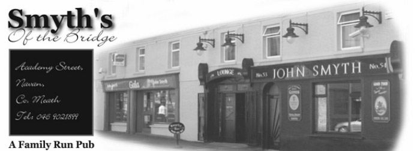

Smyth's of the Bridge, Academy Street, Navan, Co. Meath. Phone: 046 9021899
Smyth’s of the Bridge, A Family Run Pub
If you want a glass of malt
that no epicure can fault
just take a walk and halt
at Smyth’s select bars.
The rhyme penned by John's Grandfather Pat, who purchased the premises in
December 1934, and which has been used ever since as a symbol of the quality
and reliability of Smyth’s.
Patrick Smyth begin his career as a publican on Market Square, purchasing his
second pub in Academy Street
in 1934. In those days the pub was called
The Dublin House,
long before the town bypass when Academy Street was the main road to Dublin out
of Navan. His son John took over the pub and developed both the bar and shop,
opening one of the first Mini-Marts in Navan. John Senior ran the business
from 1949 and in 1984, John Junior returned to the business and was joined by wife Irene.
In 2002 John and Irene embarked on major redevelopment. Our new look pub is
warm luxurious and welcoming, successfully combining the traditional and modern,
retaining the nostalgic Forge area of past times in Navan with new areas like
the
French Kitchen. Our contemporary area leads to a modern
section which is proving very popular for all types of parties and get together.
We also feature a beer Garden,
The Railway Garden which
incorporates an area called the
Bicycle Shed.
Another aspect of the business is a link between the traditional Publican /
Grocer style premises. A customer can still have morning coffee, lunch and
afternoon snack or drink and arrange their grocery and off-licence
requirements as well. You can also play Lotto at Smyth's Gala.
"Bringing traditional values to modern convenience"
John & Irene are the same as the generations before them with emphasis on
providing quality produce,
customer care and friendly service of our food. Our menu is varied and
interesting and we hope you enjoy your visit to our pub and we will have the
pleasure of welcoming you.
email